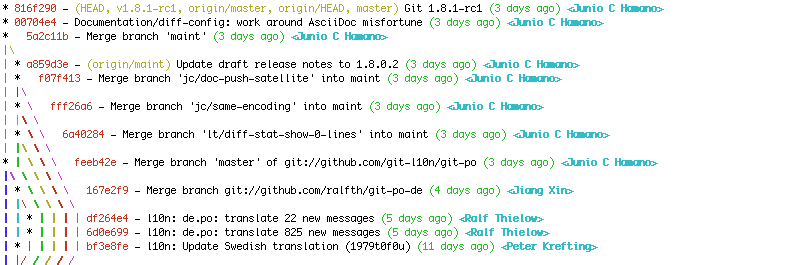
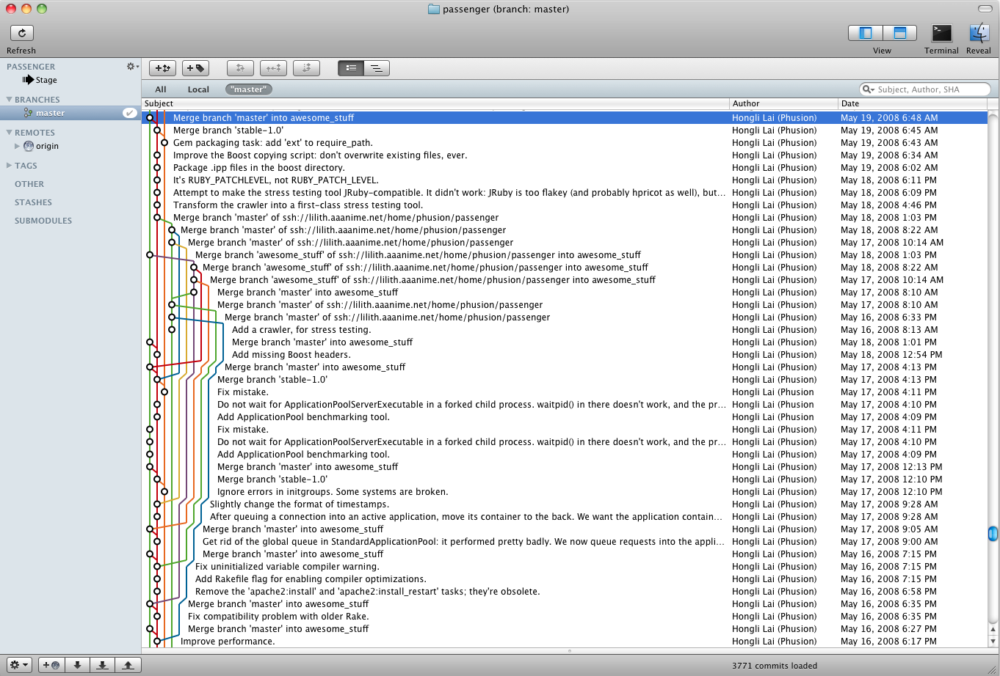
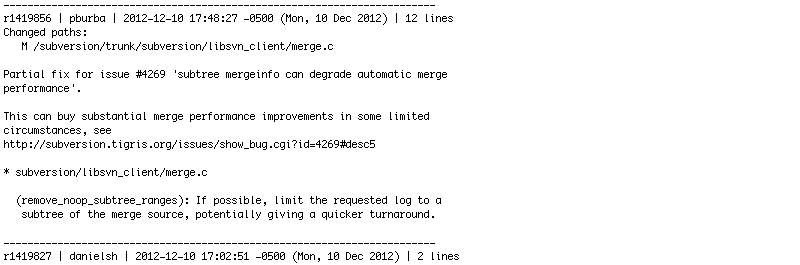
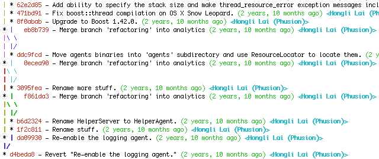
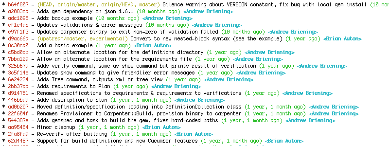

… all meaningful operations can be expressed in terms of the rebase command. Once you figure that out it all makes sense.
~ Linus Torvalds
Yes, Rebase
A comparison of merge and rebase workflows
Andrew Briening (abriening)
Prerequisites
You are probably...
- a professional developer or designer
- a user of Git, SVN or other revision control tool
- familiar with git merge +/or rebase commands
Content
- Why use an SCM or care about history?
- Review SVN workflows (for comparison)
- Review +/- of merge workflows
- Review +/- of rebase workflows
- Tools & Techniques
Why Use Source Control?
- Source backup?
- Deployment tracking?
- Ease collaboration?
- …
We don't accept Spaghetti Code
Why accept spaghetti history?
Accountability
You should know when and why any changes were made.
This requires a clean history.
But what does that realy mean?
When are you cleaning history, or destroying it?
We'll come back to this later …
Workflows
SVN Workflows
SVN publishes the recommended usage in their Svnbook.
Git on the other hand …
%> man git
GIT(1)
NAME
git - the stupid content tracker
...
We'll come back to this later …
SVN: Merge-ish
Use svn update to pull-down the changes from the remote and apply them to your local working copy.
%> svn update
Updating '.':
Conflict discovered in 'sandwich.txt'.
Select: (p) postpone, (df) diff-full, (e) edit,
(mc) mine-conflict, (tc) theirs-conflict,
(s) show all options: p
C sandwich.txt
Updated to revision 2.
Summary of conflicts:
Text conflicts: 1
This usually leaves a messy set of conflicts if you have uncommitted changes.
You then resolve all of the conflicts and attempt to commit again.
SVN: Rebase-ish
The friendlier technique outlined in the book is to use svn status -u to review the upstream files/commits.
svn status -u -v
M * 44 23 sally README
M 44 20 harry bar.c
* 44 35 harry stuff/trout.c
D 44 19 ira stuff/fish.c
A 0 ? ? stuff/things/bloo.h
Status against revision: 46
This allows you to then update and resolve files one at a time using svn update stuff/trout.c.
SVN: Branches (Sqash-ish)
- Merge Tracking added in v1.5; merges were previously maintained by the user
- Recomended to merge often from trunk to the branch
- These incremental merges are just to avoid Merge Hell
- Merge back to trunk is one large patch
- Delete the branch
Git Merge Workflows
Git-flow

Merge: Git-flow
- Branch always
- master: deployed version history
- develop: Next to be deployed
- Method for hotfixes to
master - Release branches
- Tagged releases
Merge: Git-flow
Merge: Mashion Workflow
- Modified git-flow but without git extensions
- Throwaway integration branches for testing multiple feature branches
- …
- More info
Merge: Advantages & Drawbacks
- Yay! Can use
git branch --mergedto see if a branch is in master - Yay! Only one command to learn:
git merge - Boo! Merge conflicts are easy to ignore, all conflicts occur at once
- Boo! Merge conflicts can repeat if long-lived branches are continually merged
- Boo! Easier to create Spaghetti History
- Boo! Ladder merges
Ladder Merges
Don't merge upstream code at random points
Don't merge downstream code at random points either
- The code you merge in should be for a specific purpose
- At a specific point in the other branch's history
Git Rebase Workflows
… all meaningful operations can be expressed in terms of the rebase command. Once you figure that out it all makes sense.
No Love For Rebase
Rebase: Hashrocket Worflow
With a feature branch:
* 3dcd585 Adding Comment model, migrations, spec
* 9f5c362 Adding Comment controller, helper, spec
* dcd4813 Adding Comment relationship with Post
* 977a754 Comment belongs to a User
* 9ea48e3 Comment form on Post show page
It will get merged as one commit with a message like:
[#3275] User Can Add A Comment To a Post
* Adding Comment model, migrations, spec
* Adding Comment controller, helper, spec
* Adding Comment relationship with Post
* Comment belongs to a User
* Comment form on Post show page
- Squash workflow
- Branch commits destroyed; applied as one patch to master
- Look familiar?
- More info
Rebase: Neomind Workflow
Modified git-flow without the extensions.
- Master => Production, Develop => Master
- Timestamped release tags,
git datetag release-2012-12-11T01.39.50- Throwaway integration branches for testing multiple feature branches
Rebase: Neomind Workflow
Modified git-flow without the extensions.
- Rebase feature and bug branches against master before merging
- Use octopus merge for several branches at once
- Use no-fast-forward for several related commits
A Rebased History Is Boring
Delineate Branch History With No-Fast-Forward
Octopus Merges Are Fun
Rebase: Advantages & Drawbacks
- Yay! A clean history!
- Yay! Rebase conflicts occur one at a time
- Yay! No Ladder merges
- Boo! More commands to learn
- Boo! Recovering from mistakes is difficult for beginners
Long-Lived Branches
What about long-lived branches?
Don't use long-lived branches
Long-Lived Branches
No, really, what about long-lived branches?
- Decompose your features into negotiable chunks
- Sometimes unavoidable. ex re-design
- Merge may be the best solution…
- but avoid ladders, merge with purpose
- Assign a gatekeeper
- Feature Toggle
- A Microcosm Workflow
The Microcosm Workflow
microcosm/next » ancestor of master
microcosm/feature-456 » decendent of microcosm/next
microcosm/bug-123 » decendent of microcosm/next
microcosm/integration » throw-away integration
- next acts like master
- Always branch from next
- Features and bugs are merged into next
- Create integration branches for staging & testing
Safety Equipment
Some tools & techniques to keep you safe while merging & rebasing.
Throw-away Integration Branches
To test the interaction of several topics, merge them into a throw-away branch. You must never base any work on such a branch!
Reuse Recorded Resolution
If you start using throw-away integration branches then git rerere will be your new best friend.
%> git merge i18n-world
Auto-merging hello.rb
CONFLICT (content): Merge conflict in hello.rb
Recorded preimage for 'hello.rb'
Automatic merge failed; fix conflicts and then commit the result.
%> git add hello.rb
%> git commit
Recorded resolution for 'hello.rb'.
[master 68e16e5] Merge branch 'i18n'
No Fast-Forward
git merge --no-ff
Don't Fear Destroying History
You can always make more branches.
git checkout -b feature-123-b feature-123
git rebase master
Reflog
And ther is always the reflog
git reflog
b64f807 HEAD@{0}: commit: Silence warning about VERSION...
a2083ca HEAD@{1}: commit: Adds gem dependency on json 1...
adc1095 HEAD@{2}: commit: Adds backup example
ef1c4ab HEAD@{3}: commit: Updates validations & error m...
cf681af HEAD@{4}: commit: Updates validations & error m...
e97f1f3 HEAD@{5}: commit: Updates carpenter binary to e...
d9ac66a HEAD@{6}: checkout: moving from validation_unit...
3322ef8 HEAD@{7}: commit: Unit tests for validation
d9ac66a HEAD@{8}: checkout: moving from experimental to...
d9ac66a HEAD@{9}: checkout: moving from d9ac66a69cabee1...
d9ac66a HEAD@{10}: pull : Fast-forward
c5bd0ab HEAD@{11}: merge allow-alternate-definitions-di...
git reset --hard a2083ca
Stash / Interrupted Workflow
git stash; git stash pop
git save; git restore
# .gitconfig
[alias]
save = !git add . && git commit -a -m"WIP"
restore = !git reset --soft HEAD^ && git reset
Just Remember, Git Is Stupid
Pay attention & be safe.